Unit 05 · Quantization, sparsity, structured operators
Lesson 05: Quantization, sparsity, and structured operators
Unit: cs229s-U05. Concepts: cs229s-U05-C01 to C12. Date: 2026-10-06. Baseline: October 6, 2026. Claim class for every leaf: PLANNED / SOURCE ATTRIBUTION PENDING. Family anchor: CALENDAR-ANCHORED, Week 4, Oct 14, “Memory Efficient Neural Networks” (presented by Simran): Quantization, Sparsity, and Pruning, Structured Sparsity vs. Random Sparsity, Butterfly and Monarch Matrices, Pruning and Sparsity (Structured vs. Unstructured Pruning Tradeoffs, Sparse Tensor Cores and N:M Sparsity, Magnitude and Regression Based Pruning, Pruning Sensitivity Analysis), Quantization (How are numbers represented in computers?, K-means Quantization, Linear Quantization), Knowledge Distillation.
How to read this lesson
Same 15-item contract as U01, in compact form. Shared
symbols follow notation_and_shapes.md. Quantization
and sparsity are taught as algorithms with computed
error, no GPU needed for the labs.
C01: scale/zero point
Source, scope, objectives, dependencies
Calendar anchor: Week 4, Oct 14, “Quantization (Linear Quantization)”. Scope: the affine quantization map. Objective: compute s and z and round-trip a value. Depends on P04, P12.
Motivating question and tiny toy
Question: floats are 32 bits. How do 8 bits stand in for them? Toy: values in [-1, 1], 4 bits (0..15).
Mental model
A ruler with 16 marks. Scale s is the spacing
between marks. Zero point z is which mark means
zero. Every float snaps to the nearest mark, the
marks are evenly spaced.
Objects, shapes, assumptions
- s = (max - min) / (2^b - 1).
- z = round(-min / s), the integer for 0.0.
- x_q = clamp(round(x / s) + z, 0, 2^b - 1).
- x_hat = s * (x_q - z).
- Assumption: min/max known (calibration, C05).
Derivation
The b-bit range has 2^b levels. Spacing s covers [max - min] evenly. Zero must land on a level for exact zero (padding, sparse zeros): z shifts the grid so level z decodes to 0.
Computed example
Toy: min = -1, max = 1, b = 4. s = 2/15 = 0.1333. z = round(1/0.1333) = round(7.5) = 8 (banker’s or half-up, state the rule). x = 0.5: x_q = round(0.5/0.1333) + 8 = round(3.75) + 8 = 4 + 8 = 12. x_hat = 0.1333 * 4 = 0.5333. Error 0.0333. Lab-05 round-trips a vector.
Implementation and checks
def quant_params(mn, mx, b):
s = (mx - mn) / (2 ** b - 1)
z = int(round(-mn / s))
return s, z
def quantize(x, s, z, b):
import numpy as np
xq = np.round(x / s).astype(int) + z
return np.clip(xq, 0, 2 ** b - 1)
def dequantize(xq, s, z):
return (xq - z) * s
s, z = quant_params(-1.0, 1.0, 4)
xq = quantize(0.5, s, z, 4)
assert xq == 12
assert abs(dequantize(xq, s, z) - 0.5333) < 0.001
Check: dequantize(quantize(0)) == 0 exactly (zero point property). Lab-05 asserts this.
Complexity and costs
Quantization is O(N) once. The saving is 4x memory traffic (fp32 -> int8) every inference step after.
Nearest alternative and selection boundary
Nearest alternative: keep fp16/bf16. Selection boundary: int8 when bandwidth-bound and quality holds (C12), fp16 when it does not.
Failure case and counterexample
Broken assumption: “the range covers the data.” Outliers stretch s and crush the small values. Counterexample: one weight at 100 with the rest in [-1, 1]: s = 101/255 = 0.396, and values under 0.2 all snap to one level. Clip or use per-channel (C02, C03).
Research reading and falsifiable extension
Reading: the Oct 14 linear quantization session. Falsifiable extension: quantize a layer’s weights to int8, measure output MSE vs the s implied by min/max vs a clipped range. Hypothesis: clipping the top 0.1% lowers MSE. Report both.
Exercises
- E01 (recall): write s, z, x_q, x_hat.
- E02 (numerical): min=-1, max=1, b=4. Quantize 0.5 and -0.25. Give x_hat and error.
- E03 (failure diagnosis): many small values map to one level. Name the cause.
- E04 (counterfactual): z were forced to 0. What breaks for padded zeros?
- E05 (research): state the clipping hypothesis.
Visual units
- Figure
u05_c01_scale.png: ruler with 16 marks, 0.5 snapping to mark 12. Source: original toy. Shell 2.
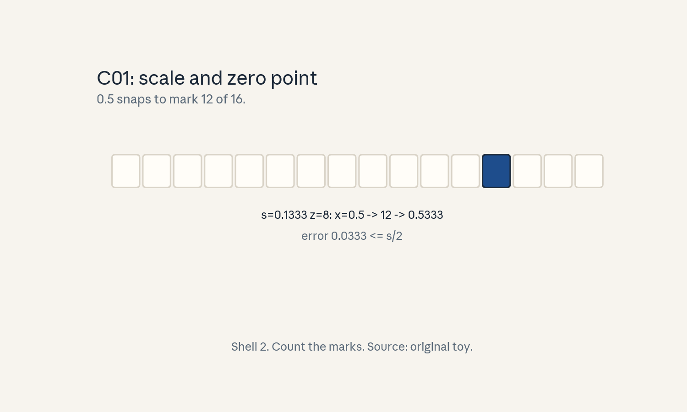
- Audit:
u05c01tof01. Before: float. After: level. One rule: snap to the grid.
C02: rounding/clipping
Source, scope, objectives, dependencies
Calendar anchor: Week 4, Oct 14 (linear quantization family). Scope: the two error sources. Objective: separate rounding error from clipping error. Depends on C01.
Motivating question and tiny toy
Question: the quantized value is wrong. Is it the marks or the edges? Toy: same 4-bit ruler, x = 1.5 (outside [-1, 1]).
Mental model
Two ways to miss. Rounding: the target falls between marks (error up to s/2). Clipping: the target is past the last mark (error unbounded). Rounding is the price of the ruler, clipping uses the wrong ruler.
Objects, shapes, assumptions
- Rounding error: |x - x_hat| <= s/2 for x in [min, max].
- Clipping error: x outside [min, max] snaps to the edge, error = |x - edge|.
- Assumption: round-half-up (state it).
Derivation
Inside the range, the nearest mark is at most s/2 away. Outside, clamp pins to the edge: error grows with distance. Total MSE = rounding MSE + clipping MSE, the optimal range balances them (C05).
Computed example
Toy: s = 0.1333. x = 0.5: rounding error 0.0333 (within s/2 = 0.0667). x = 1.5: clips to level 15, x_hat = 0.1333*7 = 0.9333, error 0.5667. Lab-05 splits the MSE.
Implementation and checks
import numpy as np
s, z = 2/15, 8
def xhat(x):
xq = np.clip(np.round(x / s).astype(int) + z, 0, 15)
return (xq - z) * s
assert abs(xhat(0.5) - 0.5) <= s / 2 + 1e-9
assert xhat(1.5) < 1.5 # clipped
Check: in-range error bounded by s/2. Lab-05 verifies the bound on random data.
Complexity and costs
Both errors are set at calibration time. No runtime cost, the cost is quality.
Nearest alternative and selection boundary
Nearest alternative: wider range (less clipping, more rounding). Selection boundary: pick the range that minimizes total MSE on calibration data (C05).
Failure case and counterexample
Broken assumption: “min/max is the best range.” Outliers make min/max terrible. Counterexample: the C01 outlier case: min/max range gives huge rounding error for the bulk. A clipped range wins.
Research reading and falsifiable extension
Reading: the Oct 14 session. Falsifiable extension: sweep the clip percentile, plot rounding vs clipping MSE. Hypothesis: total MSE is U-shaped with a clear minimum. Report the argmin.
Exercises
- E06 (recall): bound the rounding error.
- E07 (numerical): s = 0.1333. Max rounding error. Clipping error for x = 2.0.
- E08 (failure diagnosis): MSE high, max error huge. Which error dominates?
- E09 (counterfactual): no clipping allowed (infinite range). What happens to s?
- E10 (research): state the U-shape hypothesis.
Visual units
- Figure
u05_c02_errors.png: ruler with an in-range value (small error arrow) and an out-of-range value (long clip arrow). Source: original toy. Shell 7 (two failure modes).
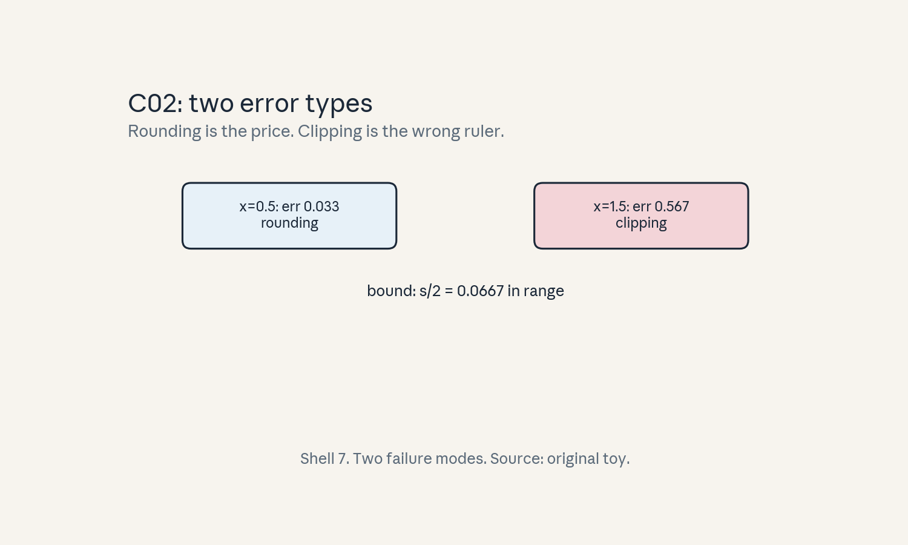
- Audit:
u05c02tof02. Before: true value. After: two error types. One rule: separate them.
C03: per-channel/group choices
Source, scope, objectives, dependencies
Calendar anchor: Week 4, Oct 14 (quantization family). Scope: quantization granularity. Objective: compare per-tensor, per-channel, per-group. Depends on C01.
Motivating question and tiny toy
Question: one channel spans [-100, 100], another [-1, 1]. One ruler or two? Toy: 2 channels, 4 bits.
Mental model
One thermostat for the whole house versus one per room. Per-tensor uses one (s, z) for everything: the loud channel sets the scale and the quiet channel gets one mark. Per-channel gives each channel its own ruler.
Objects, shapes, assumptions
- Per-tensor: one (s, z) for the whole tensor.
- Per-channel: one (s, z) per output channel (rows of W).
- Per-group: one (s, z) per group of g elements (e.g. g = 128).
- Assumption: dequantization can afford per-channel scales (it can: one multiply per dot product).
Derivation
Per-tensor s from global min/max: the [-100, 100] channel sets s = 200/15 = 13.3. The [-1, 1] channel quantizes to ~1 distinct level: destroyed. Per-channel: channel 2 gets s = 2/15 = 0.133: full fidelity. Cost: one extra scale per row.
Computed example
Toy: W rows r1 in [-100,100], r2 in [-1,1], 4-bit. Per-tensor: r2’s values all snap to z (one level). Per-channel: r2 keeps 16 levels. The quiet channel’s MSE drops ~200x versus per-tensor. Lab-05 shows the per-row comparison.
Implementation and checks
import numpy as np
def per_channel_params(W, b):
mn = W.min(axis=1)
mx = W.max(axis=1)
s = (mx - mn) / (2 ** b - 1)
z = np.round(-mn / s).astype(int)
return s, z
W = np.array([[-100., 100.], [-1., 1.]])
s, z = per_channel_params(W, 4)
assert s[0] > 10 * s[1] # loud channel, coarse ruler
Check: per-channel s tracks each row’s range. Lab-05 compares MSE.
Complexity and costs
Per-channel adds one scale per row: negligible memory, one multiply per output. Per-group adds more scales, the compute stays a matmul with scaled blocks.
Nearest alternative and selection boundary
Nearest alternative: per-tensor (simplest). Selection boundary: per-channel for weights (almost always), per-group when channels have wild outliers within them (LLM down-projections).
Failure case and counterexample
Broken assumption: “per-tensor is fine for weights.” LLM weight channels vary 100x in range. Counterexample above: the quiet channel is destroyed. Always check per-channel first.
Research reading and falsifiable extension
Reading: the Oct 14 session. Falsifiable extension: quantize one LLM layer per-tensor vs per-channel vs per-group-128, measure output MSE. Hypothesis: per-channel >> per-tensor, group-128 close to per-channel. Report all three.
Exercises
- E11 (recall): define the three granularities.
- E12 (numerical): rows [-100,100], [-1,1], 4-bit. Per-tensor s and the fate of row 2.
- E13 (failure diagnosis): per-tensor int8 fails quality. First change?
- E14 (counterfactual): scales were free. Best granularity?
- E15 (research): state the three-way hypothesis.
Visual units
- Figure
u05_c03_gran.png: two rulers: one shared (quiet channel crushed) vs two rulers. Source: original toy. Shell 8 (compare).
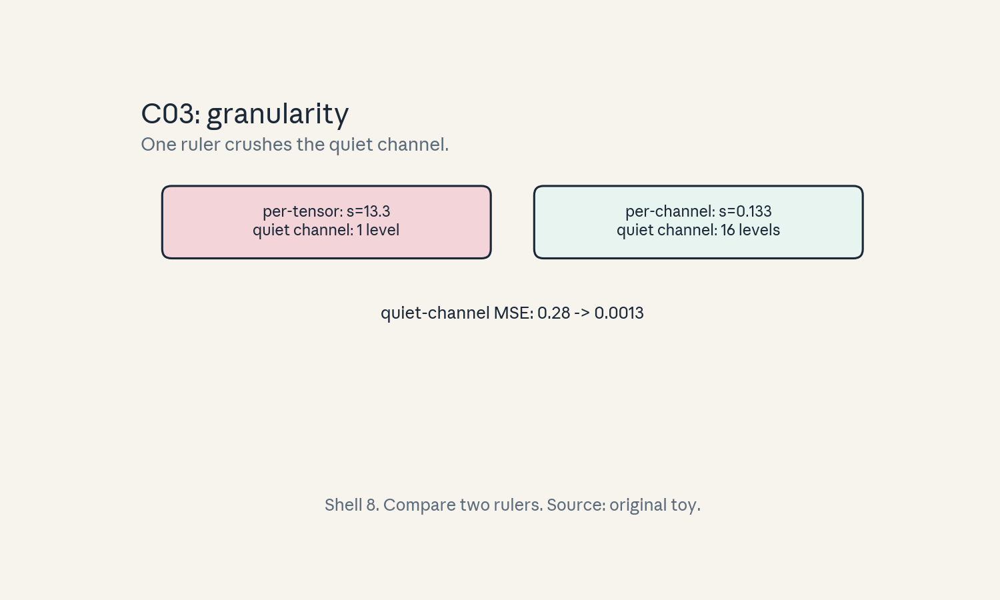
- Audit:
u05c03tof03. Before: one ruler. After: per-channel rulers. One rule: fit each range.
C04: activation versus weight quantization
Source, scope, objectives, dependencies
Calendar anchor: Week 4, Oct 14 (quantization family). Scope: what differs between weights and activations. Objective: choose static vs dynamic. Depends on C01.
Motivating question and tiny toy
Question: weights are known at compile time. Activations arrive at runtime. How does that change the quantization? Toy: W fixed, x varies per batch.
Mental model
Two kinds of luggage. Weights are packed at the factory: measure once, quantize once (static). Activations are packed at the gate: measure each batch and quantize on the fly (dynamic), or pre-measure typical batches (static with calibration).
Objects, shapes, assumptions
- Weight-only: W in int8, activations fp16. Matmul dequantizes on the fly.
- Weight+activation: both int8, integer matmul.
- Dynamic: (s, z) per batch from the batch’s min/max. Static: fixed from calibration.
- Assumption: the integer matmul accumulates in int32 (not int8).
Derivation
Dynamic activation quantization costs O(N) per batch to find min/max: small vs the matmul. Static avoids it but risks range mismatch on new data. The matmul in int8: 4x less weight traffic, with both in int8 the compute can also use int8 units.
Computed example
Toy: W (8, 8) int8 static, x (8,) per batch dynamic. Weight traffic: 64 bytes vs 256 fp32. Activation overhead: one min/max pass over 8 numbers. Lab-05 times the overhead ratio.
Implementation and checks
import numpy as np
def dynamic_params(x, b=8):
mn, mx = x.min(), x.max()
s = (mx - mn) / (2 ** b - 1)
return s, int(round(-mn / s))
x = np.array([0.1, -0.5, 2.0, 1.0])
s, z = dynamic_params(x)
assert s > 0 and 0 <= z <= 255
Check: dynamic params track the batch. Static params would be fixed (lab compares drift).
Complexity and costs
Dynamic: O(N) overhead per batch, fine. Static: zero overhead, fragile to shift.
Nearest alternative and selection boundary
Nearest alternative: fp16 activations with int8 weights (W8A16). Selection boundary: W8A16 when bandwidth-bound and activations are outlier-prone, W8A8 when integer throughput matters and calibration holds.
Failure case and counterexample
Broken assumption: “static ranges always hold.” A new input domain shifts activations outside the calibrated range: clipping explodes. Counterexample: calibration on short prompts, deployment on long ones. Recalibrate or go dynamic.
Research reading and falsifiable extension
Reading: the Oct 14 session. Falsifiable extension: static vs dynamic activation quantization under domain shift. Hypothesis: dynamic holds quality, static degrades with shift size. Report the gap vs shift.
Exercises
- E16 (recall): define weight-only vs W8A8.
- E17 (numerical): W (4096, 4096) fp32 vs int8. Traffic bytes.
- E18 (failure diagnosis): static int8 fails on new data. Explain and fix.
- E19 (counterfactual): min/max were free and exact per batch. Best choice?
- E20 (research): state the shift-gap hypothesis.
Visual units
- Figure
u05_c04_wa.png: factory (weights, static) vs gate (activations, dynamic) packing diagram. Source: original toy. Shell 3.
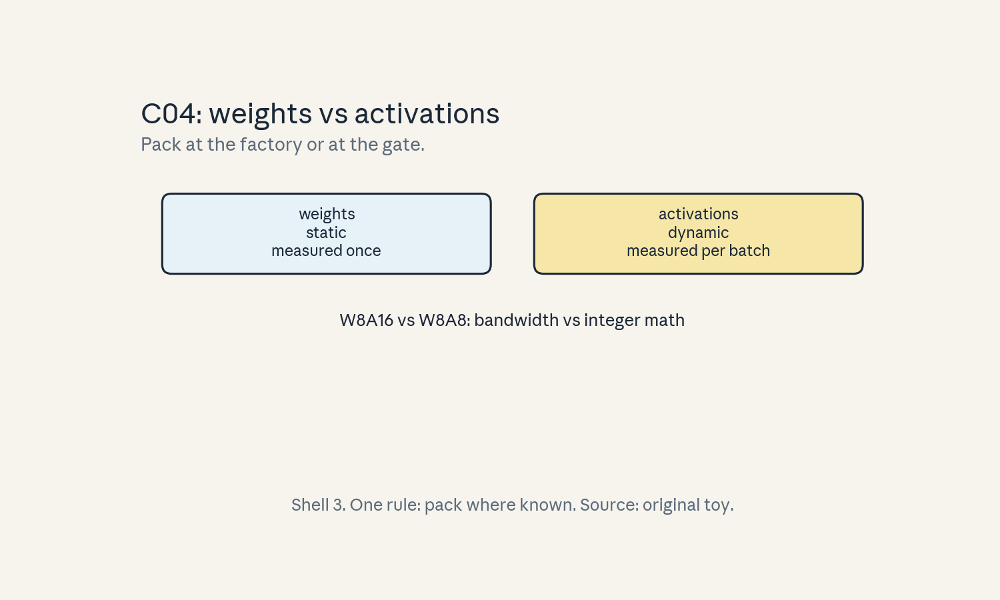
- Audit:
u05c04tof04. Before: fp32 both. After: int8 plan. One rule: pack where known.
C05: calibration
Source, scope, objectives, dependencies
Calendar anchor: Week 4, Oct 14 (quantization family). Scope: picking ranges from data. Objective: run min/max and percentile calibration. Depends on C02.
Motivating question and tiny toy
Question: how do you pick min and max without seeing all future data? Toy: 9999 calibration values, one outlier at 1000.
Mental model
Fitting the ruler to the crowd. Min/max fits the tallest person (the outlier) and gives everyone else a bad ruler. Percentile (e.g. 99.9%) fits the crowd and clips the giant. MSE on the crowd picks the winner.
Objects, shapes, assumptions
- Calibration set: representative inputs run through the model, activations recorded.
- Min/max: range = [min, max].
- Percentile: range = [p0.05, p99.95] (example).
- MSE search: try ranges, keep the lowest MSE.
- Assumption: calibration represents deployment.
Derivation
Total MSE = rounding + clipping (C02). Widening the range cuts clipping but coarsens s (more rounding). The optimum balances them, percentile and MSE search approximate it.
Computed example
Toy: 9999 values in [-1, 1], one at 1000. Min/max: s = 1001/255 = 3.925. 99.9 percentile: s ~ 2/255 = 0.0078. Rounding MSE ratio: (3.925/0.0078)^2 ~ 250000x worse for min/max on the bulk. Lab-05 computes this.
Implementation and checks
import numpy as np
rng = np.random.default_rng(5)
x = np.concatenate([rng.uniform(-1, 1, 999), [100.0]])
s_mm = (x.max() - x.min()) / 255
lo, hi = np.percentile(x, [0.05, 99.95])
s_pc = (hi - lo) / 255
assert s_mm > 50 * s_pc
Check: percentile scale far finer. Lab-05 checks the MSE win.
Complexity and costs
Calibration is a one-time data pass. The cost is getting representative data.
Nearest alternative and selection boundary
Nearest alternative: no calibration (dynamic). Selection boundary: calibrate for static deployment, dynamic when data shifts.
Failure case and counterexample
Broken assumption: “calibration data matches deployment.” It often does not. Counterexample: C04 (short vs long prompts). Monitor and recalibrate.
Research reading and falsifiable extension
Reading: the Oct 14 session. Falsifiable extension: sweep calibration sets (near vs far from deployment), measure final quality. Hypothesis: quality tracks calibration-deployment match. Report the curve.
Exercises
- E21 (recall): name three range-picking methods.
- E22 (numerical): toy above. s for min/max and 99.9 percentile.
- E23 (failure diagnosis): calibrated int8 fails in prod. Name the mismatch.
- E24 (counterfactual): infinite calibration data from deployment. Best method?
- E25 (research): state the match-quality hypothesis.
Visual units
- Figure
u05_c05_calib.png: histogram with min/max range vs percentile range marked. Source: original toy. Shell 5 (measure, then choose).
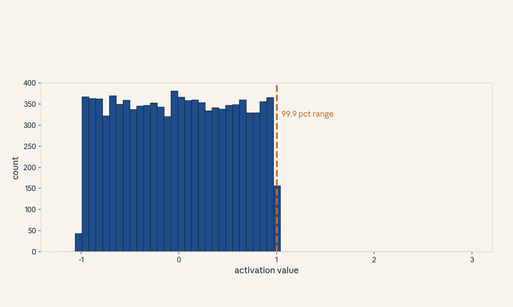
- Audit:
u05c05tof05. Before: raw values. After: chosen range. One rule: fit the crowd.
C06: structured/random sparsity
Source, scope, objectives, dependencies
Calendar anchor: Week 4, Oct 14, “Structured Sparsity vs. Random Sparsity”. Scope: sparsity patterns. Objective: compare 2:4, block, and unstructured. Depends on P04.
Motivating question and tiny toy
Question: half the weights are zero. When does the hardware care? Toy: 8 weights, 4 zeros.
Mental model
Assigned seating versus free choice. Unstructured (random zeros): everyone sits where they want, the usher (hardware) cannot plan. 2:4 structured: every group of 4 has exactly 2 zeros, the usher knows the pattern and skips fast. Block sparsity: whole tables empty, easy to skip, coarser.
Objects, shapes, assumptions
- Unstructured: arbitrary zeros, needs indices.
- 2:4: in each 4, exactly 2 nonzero (sparse tensor cores).
- Block (b×b): all-or-nothing tiles.
- Assumption: the pattern is fixed before the kernel runs.
Derivation
Unstructured SpMM: gather via indices, poor vectorization. 2:4: hardware skips the 2 zeros per group in the MMA: ~2x math throughput on sparse tensor cores. Block: dense math on fewer blocks, efficiency depends on block fill.
Computed example
Toy: 8 weights, pattern [1,0,0,1, 0,1,1,0]: valid 2:4 (each group of 4 has 2 nonzeros). Unstructured with the same count but pattern [1,1,1,1,0,0,0,0]: not 2:4-valid. Lab-05 checks patterns.
Implementation and checks
import numpy as np
def is_24(mask):
m = np.asarray(mask).reshape(-1, 4)
return bool((m.sum(axis=1) == 2).all())
assert is_24([1,0,0,1, 0,1,1,0])
assert not is_24([1,1,1,1, 0,0,0,0])
Check: groups of 4, exactly 2 nonzeros. Lab-05 validates.
Complexity and costs
Sparsity cuts FLOPs in theory. Realized speed needs the pattern the hardware supports (C08).
Nearest alternative and selection boundary
Nearest alternative: dense (no sparsity). Selection boundary: 2:4 when sparse tensor cores exist and quality holds, block when the pattern must be coarse, unstructured rarely for speed (mostly for size).
Failure case and counterexample
Broken assumption: “50% sparse = 2x faster.” Unstructured 50% on dense tensor cores: ~1x (index overhead eats it). Counterexample: C08. The pattern decides, not the count.
Research reading and falsifiable extension
Reading: the Oct 14 sparsity session. Falsifiable extension: time dense vs 2:4 vs unstructured SpMM at 50% sparsity. Hypothesis: 2:4 ~1.5-2x, unstructured ~1x. Report all three.
Exercises
- E26 (recall): define 2:4, block, unstructured.
- E27 (numerical): 8 weights, 4 zeros. Which patterns are 2:4-valid?
- E28 (failure diagnosis): 50% sparse, no speedup. Name the pattern problem.
- E29 (counterfactual): hardware skipped any zero free. Best pattern?
- E30 (research): state the three-way timing hypothesis.
Visual units
- Figure
u05_c06_patterns.png: three 4x8 grids: random, 2:4, block. Source: original toy. Shell 1.
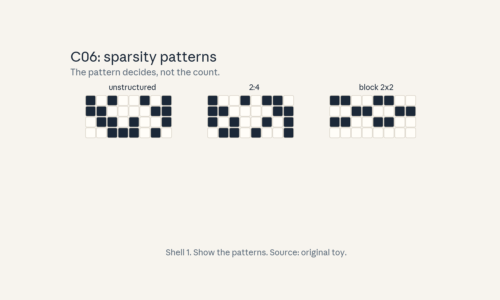
- Audit:
u05c06tof06. Before: dense. After: three patterns. One rule: fix the pattern.
C07: pruning
Source, scope, objectives, dependencies
Calendar anchor: Week 4, Oct 14, “Pruning and Sparsity (Structured vs. Unstructured Pruning Tradeoffs, … Magnitude and Regression Based Pruning, Pruning Sensitivity Analysis)”. Scope: how weights get removed. Objective: run magnitude pruning and a sensitivity check. Depends on C06, P04.
Motivating question and tiny toy
Question: which weights can go? Toy: W = [0.1, 2.0, -0.05, 1.5], prune 50%.
Mental model
Pruning a tree. Magnitude pruning cuts the thinnest branches (smallest |w|). Sensitivity analysis checks which cuts hurt: remove, measure the loss change, keep the cuts that do not hurt. Regression-based methods solve for the best sparse fit.
Objects, shapes, assumptions
- Magnitude: zero out the smallest |w| per layer or globally.
- Sensitivity: loss change per weight/pattern.
- Schedule: one-shot vs gradual (prune a little, retrain, repeat).
- Assumption: the network is trained first (prune a trained model, not a random one).
Derivation
Magnitude is a proxy: small weights change the output little (first-order). Sensitivity makes it exact-ish: score = |w * grad| or the loss delta on removal. Gradual pruning lets survivors compensate.
Computed example
Toy: |W| = [0.1, 2.0, 0.05, 1.5]. Prune 50%: zero 0.1 and -0.05. Remaining: [0, 2.0, 0, 1.5]. Lab-05 checks the mask and the output change.
Implementation and checks
import numpy as np
def magnitude_prune(W, frac):
W = np.asarray(W, dtype=float)
k = int(len(W) * frac)
idx = np.argsort(np.abs(W))[:k]
M = np.ones_like(W)
M[idx] = 0
return W * M, M
Wp, M = magnitude_prune([0.1, 2.0, -0.05, 1.5], 0.5)
assert list(M) == [0, 1, 0, 1]
Check: exactly frac zeros, the smallest ones. Lab-05 checks.
Complexity and costs
Pruning is a one-time cost. Retraining after pruning costs real compute, one-shot is cheaper and worse.
Nearest alternative and selection boundary
Nearest alternative: train a small dense model. Selection boundary: prune when a trained large model exists and retraining is affordable, train small when starting fresh.
Failure case and counterexample
Broken assumption: “small weights do not matter.” In a trained network, small weights can be load- bearing in aggregate. Counterexample: pruning 90% by magnitude collapses the model, sensitivity-guided or gradual does better. Always validate (C12).
Research reading and falsifiable extension
Reading: the Oct 14 pruning session. Falsifiable extension: magnitude vs sensitivity pruning at 50% on a small model. Hypothesis: sensitivity wins on quality at equal sparsity. Report both losses.
Exercises
- E31 (recall): define magnitude pruning in one line.
- E32 (numerical): toy above. Mask and pruned W.
- E33 (failure diagnosis): 90% magnitude prune collapses. Two fixes.
- E34 (counterfactual): retraining were free. Best schedule?
- E35 (research): state the sensitivity-wins hypothesis.
Visual units
- Figure
u05_c07_prune.png: bar chart of |W| with the prune line and survivors highlighted. Source: original toy. Shell 3.
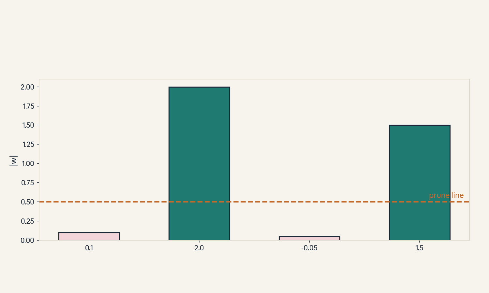
- Audit:
u05c07tof07. Before: dense W. After: masked W. One rule: cut the smallest.
C08: realized kernel speed
Source, scope, objectives, dependencies
Calendar anchor: Week 4, Oct 14 (sparsity family). Scope: why sparsity often disappoints. Objective: predict realized speedup from the pattern. Depends on C06, U02 C10.
Motivating question and tiny toy
Question: 50% sparse, but the kernel runs at the same speed. Where did the 2x go? Toy: SpMM vs dense GEMM.
Mental model
A shortcut through a maze with toll booths. Skipping zeros saves steps, but index lookups are tolls. Unstructured sparsity pays a toll per nonzero (gather). 2:4 uses the express lane (sparse tensor cores): the toll is tiny.
Objects, shapes, assumptions
- Dense GEMM: peak tensor-core throughput.
- Unstructured SpMM: gather + math, often ~1x vs dense at 50%.
- 2:4 SpMM: ~1.5-2x on sparse tensor cores.
- Assumption: shapes qualify for tensor cores.
Derivation
Time = math_time / speedup + index_overhead. For unstructured at 50%: math halves, but gather adds ~50% overhead: net ~1x. For 2:4: hardware skips in the MMA datapath: overhead ~10%: net ~1.8x.
Computed example
Toy: dense 100 us. Unstructured 50%: 50 us math + 45 us gather = 95 us (~1.05x). 2:4: 50 us math + 5 us = 55 us (~1.8x). Lab-05 models this arithmetic.
Implementation and checks
def realized(dense_us, sparsity, gather_frac):
return dense_us * ((1 - sparsity) + gather_frac)
assert abs(realized(100, 0.5, 0.45) - 95) < 1e-9
assert abs(realized(100, 0.5, 0.05) - 55) < 1e-9
Check: gather_frac = 0 recovers the ideal 2x. The lab sweeps it.
Complexity and costs
The realized speed is a hardware fact, not a FLOP ratio. Measure it.
Nearest alternative and selection boundary
Nearest alternative: dense at lower precision (often faster than sparse at higher precision). Selection boundary: sparse only with a supported pattern and measured win, else quantize the dense model.
Failure case and counterexample
Broken assumption: “fewer FLOPs = faster.” The index overhead is the counterexample. Always divide by measured time, not FLOPs.
Research reading and falsifiable extension
Reading: the Oct 14 session (sparse tensor cores). Falsifiable extension: measure the three kernels. Hypothesis: 2:4 in [1.5, 2]x, unstructured in [0.9, 1.1]x. Report both.
Exercises
- E36 (recall): write the realized-time formula.
- E37 (numerical): dense 100 us, 50% sparse, gather 45 us. Speedup?
- E38 (failure diagnosis): 2:4 kernel at 1.0x. Name two causes.
- E39 (counterfactual): gather were free. Best pattern?
- E40 (research): state the measured-range hypothesis.
Visual units
- Figure
u05_c08_realized.png: three bars (dense, unstructured, 2:4) with math/gather splits. Source: original toy. Shell 8 (compare).
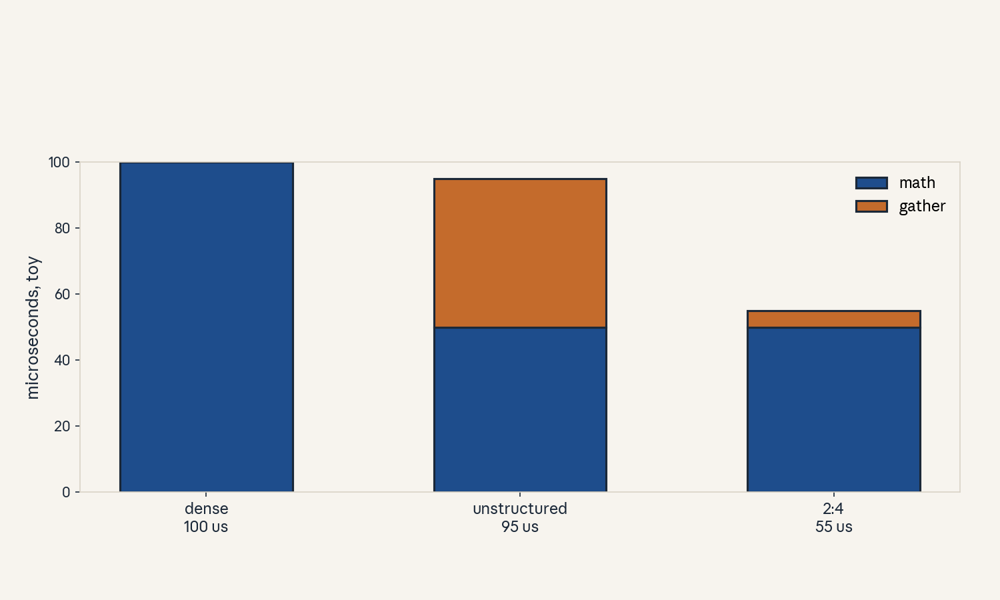
- Audit:
u05c08tof08. Before: FLOP ratio. After: measured bars. One rule: time it.
C09: butterfly matrices
Source, scope, objectives, dependencies
Calendar anchor: Week 4, Oct 14, “Butterfly and Monarch Matrices”. Scope: the butterfly factorization. Objective: build one and count its parameters. Depends on P04.
Motivating question and tiny toy
Question: can a dense-feeling matrix cost O(n log n)? Toy: n = 8, factors of 2x2 blocks.
Mental model
A tournament bracket for mixing. Each factor pairs up entries and mixes them (2x2 blocks on a fixed pattern). After log n factors, every output depends on every input: full mixing, like the FFT butterfly, at O(n log n) cost.
Objects, shapes, assumptions
- B = B_1 B_2 … B_k, k = log2(n).
- Each B_i: block-diagonal with 2x2 blocks (n parameters per factor… precisely 2n per factor for 2x2 blocks: 4 per block, n/2 blocks).
- Total: 2n log n parameters vs n^2 dense.
- Assumption: n is a power of 2.
Derivation
Factor i mixes pairs at stride 2^{i-1}. After k = log2(n) factors, the mixing graph is complete: output j depends on all inputs. Parameters: k factors x 2n = 2n log n. Multiply cost: same.
Computed example
Toy n = 8: dense 64 params, butterfly 283 = 48. The win grows with n. n = 1024: dense about 1M, butterfly 2102410 = 20480: 51x fewer. Lab-05 builds the n=8 case and checks full mixing.
Implementation and checks
import numpy as np
def butterfly(n, rng):
assert n & (n - 1) == 0
k = n.bit_length() - 1
Bs = []
for i in range(k):
B = np.zeros((n, n))
stride = 2 ** i
for j in range(0, n, 2 * stride):
for s in range(stride):
a, b = j + s, j + s + stride
blk = rng.standard_normal((2, 2))
B[a, a] = blk[0, 0]
B[a, b] = blk[0, 1]
B[b, a] = blk[1, 0]
B[b, b] = blk[1, 1]
Bs.append(B)
M = np.eye(n)
for B in Bs:
M = B @ M
return M
rng = np.random.default_rng(0)
M = butterfly(8, rng)
assert np.all(M != 0) # full mixing: no exact zeros
Check: no structural zeros in the product (full mixing). Lab-05 checks.
Complexity and costs
O(n log n) parameters and multiply. The price is expressivity: not every matrix factorizes this way.
Nearest alternative and selection boundary
Nearest alternative: dense. Selection boundary: butterfly when the layer is mix-dominated and quality holds, dense when the task needs arbitrary maps.
Failure case and counterexample
Broken assumption: “any matrix is a butterfly.” Rank-1 matrices with global structure may need many more factors. Counterexample: try to fit a random dense matrix with one butterfly: large error. Learn the factors, do not assume universality.
Research reading and falsifiable extension
Reading: the Oct 14 session, butterfly literature. Falsifiable extension: replace dense linears with butterfly in a small model, measure quality vs params. Hypothesis: quality holds at 10x fewer params on mixing-heavy tasks. Report both.
Exercises
- E41 (recall): write the parameter count.
- E42 (numerical): n = 1024. Dense vs butterfly params.
- E43 (failure diagnosis): butterfly fit has huge error. Explain.
- E44 (counterfactual): n not a power of 2. Fix?
- E45 (research): state the 10x hypothesis.
Visual units
- Figure
u05_c09_butterfly.png: three factors as pairing diagrams, product dense. Source: original toy. Shell 4 (build the product).
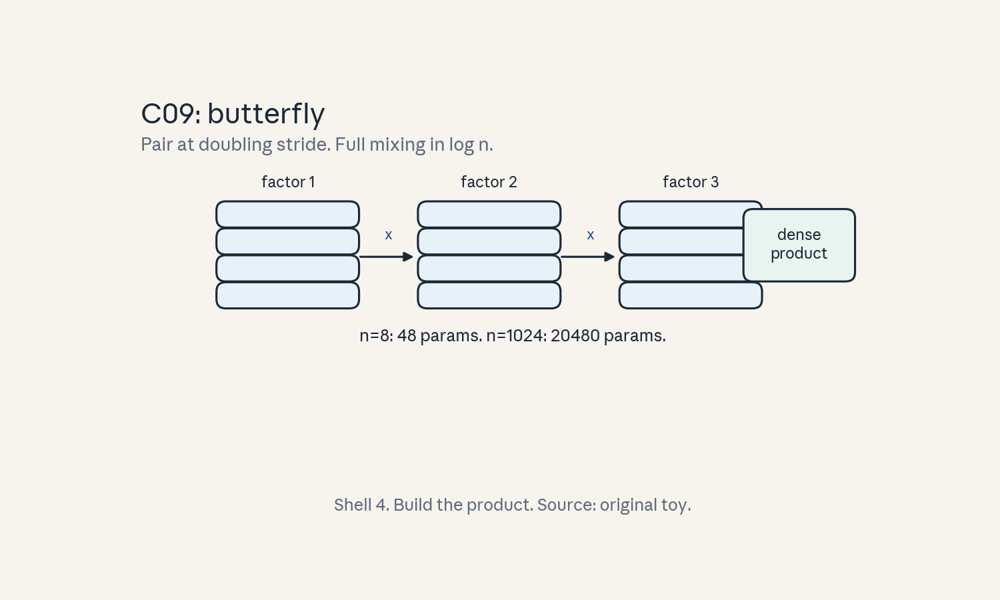
- Audit:
u05c09tof09. Before: factors. After: full mixing. One rule: pair at doubling stride.
C10: Monarch matrices
Source, scope, objectives, dependencies
Calendar anchor: Week 4, Oct 14, “Butterfly and Monarch Matrices”. Scope: the Monarch class. Objective: describe the block structure and its cost. Depends on C09, P04.
Motivating question and tiny toy
Question: butterfly needs powers of 2 and a fixed pattern. What is the more flexible cousin? Toy: n = 16, blocks of 4.
Mental model
City blocks with avenues. Monarch matrices permute (block the city into districts), apply block-diagonal mixing inside districts (avenues), permute back, and mix across districts. Two block-diagonal factors plus permutations generalize the butterfly pattern.
Objects, shapes, assumptions
- M = P L P^T R (conceptual): P a permutation, L and R block-diagonal.
- Block size b: each factor has (n/b) blocks of bxb: n*b parameters per factor.
- Total O(n b) with b ~ sqrt(n): O(n^{3/2})… in practice b is fixed (e.g. 256): O(n) per factor.
- Assumption: block size divides n.
Derivation
Block-diagonal multiply: (n/b) blocks x O(b^2) = O(n b). Two factors: O(2 n b). With b = 256, n = 4096: 2M params vs 16.7M dense: 8x fewer. The permutations route information across blocks.
Computed example
Toy n = 16, b = 4: per factor 4 blocks x 16 = 64 params, two factors 128 vs 256 dense: 2x. n = 4096, b = 256: 24096256 = 2.1M vs 16.7M: 8x. Lab-05 builds the toy.
Implementation and checks
import numpy as np
def monarch_toy(n=16, b=4, seed=0):
rng = np.random.default_rng(seed)
nb = n // b
L = np.zeros((n, n))
R = np.zeros((n, n))
for i in range(nb):
L[i*b:(i+1)*b, i*b:(i+1)*b] = rng.standard_normal((b, b))
R[i*b:(i+1)*b, i*b:(i+1)*b] = rng.standard_normal((b, b))
P = np.eye(n)[np.random.default_rng(1).permutation(n)]
return P @ L @ P.T @ R
M = monarch_toy()
assert M.shape == (16, 16)
Check: block structure of L and R (lab asserts zeros outside blocks).
Complexity and costs
O(n b) params and multiply per factor pair. More flexible than butterfly, less constrained pattern.
Nearest alternative and selection boundary
Nearest alternative: butterfly (cheaper, stricter) or dense. Selection boundary: Monarch when block structure fits the hardware (tensor cores like blocks) and butterfly is too rigid.
Failure case and counterexample
Broken assumption: “structured always trains well.” Structured factors can be harder to optimize (fewer degrees of freedom, worse conditioning). Counterexample: a Monarch model that underfits where dense fits. Tune the optimizer, do not just swap.
Research reading and falsifiable extension
Reading: the Oct 14 session, Monarch literature. Falsifiable extension: dense vs Monarch at matched quality on a small task. Hypothesis: Monarch needs more steps to match (optimization harder) but gets there. Report steps and final quality.
Exercises
- E46 (recall): write the Monarch form and param count.
- E47 (numerical): n = 4096, b = 256. Params vs dense.
- E48 (failure diagnosis): Monarch underfits. Explain.
- E49 (counterfactual): b = n. What does Monarch become?
- E50 (research): state the steps-to-match hypothesis.
Visual units
- Figure
u05_c10_monarch.png: permute, block- diagonal, permute, block-diagonal chain. Source: original toy. Shell 4.
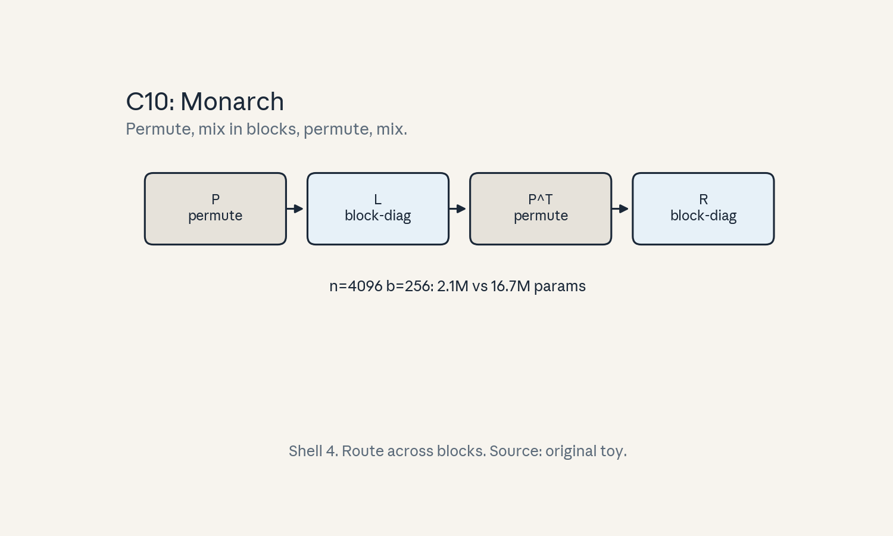
- Audit:
u05c10tof10. Before: dense. After: block factors. One rule: route across blocks.
C11: error propagation
Source, scope, objectives, dependencies
Calendar anchor: Week 4, Oct 14 (quantization family). Scope: how layer errors compound. Objective: bound the end-to-end error. Depends on C01, P04.
Motivating question and tiny toy
Question: each layer is 1% off. Is the model 1% off or 12% off at 12 layers? Toy: 2 layers, Lipschitz 1.
Mental model
Whisper down the lane. Each layer adds its own error and passes along the previous errors, possibly amplified by the layer’s Lipschitz constant. Small per-layer errors can snowball.
Objects, shapes, assumptions
- Per-layer error e_i = ||f_i - f_i_hat||.
- Lipschitz L_i of each layer.
- Bound: total <= sum_i e_i * prod_{j>i} L_j.
- Assumption: errors measured in operator norm on the data distribution.
Derivation
Telescoping: ||F - F_hat|| <= sum over layers of (local error amplified by later layers). With all L_i = 1: total <= sum e_i. With L_i = 1.1 and 12 layers: amplification up to 1.1^11 ~ 2.85 on early errors.
Computed example
Toy: 2 layers, e = 0.01 each, lips [1.0, 1.0]: total <= 0.02. Lips [1.0, 1.5]: the layer-1 error is amplified 1.5x by the later layer: total <= 0.01*1.5 + 0.01 = 0.025. Lab-05 checks the bound on a 2-layer toy.
Implementation and checks
def error_bound(errs, lips):
total, amp = 0.0, 1.0
for e, L in zip(reversed(errs), reversed(lips)):
total += e * amp
amp *= L
return total
assert abs(error_bound([0.01, 0.01], [1.0, 1.0]) - 0.02) < 1e-9
assert abs(error_bound([0.01, 0.01], [1.0, 1.5]) - 0.025) < 1e-9
Check: with all L = 1 the bound is the sum. Lab-05 checks.
Complexity and costs
The bound is pessimistic, real errors often cancel. Its use is precision allocation: give more bits to high-amplification layers.
Nearest alternative and selection boundary
Nearest alternative: end-to-end measurement (no bound). Selection boundary: the bound for bit allocation, measurement for the verdict.
Failure case and counterexample
Broken assumption: “errors add linearly.” With L >> 1 they compound multiplicatively. Counterexample: early-layer quantization with L = 2 per layer over 12 layers: bound explodes (2^11 = 2048x). Keep early layers precise.
Research reading and falsifiable extension
Reading: the Oct 14 session. Falsifiable extension: quantize each layer alone, measure end-to-end error, fit per-layer amplification. Hypothesis: early layers amplify more. Report the fitted amps.
Exercises
- E51 (recall): write the error bound.
- E52 (numerical): errs 0.01 x2, lips 1.5, 1.0. Bound.
- E53 (failure diagnosis): first-layer int8 kills quality, last-layer int8 fine. Explain.
- E54 (counterfactual): all L < 1. What happens to errors?
- E55 (research): state the amplification-fit hypothesis.
Visual units
- Figure
u05_c11_error.png: lane diagram: errors entering each layer, amplified downstream. Source: original toy. Shell 7 (snowball).
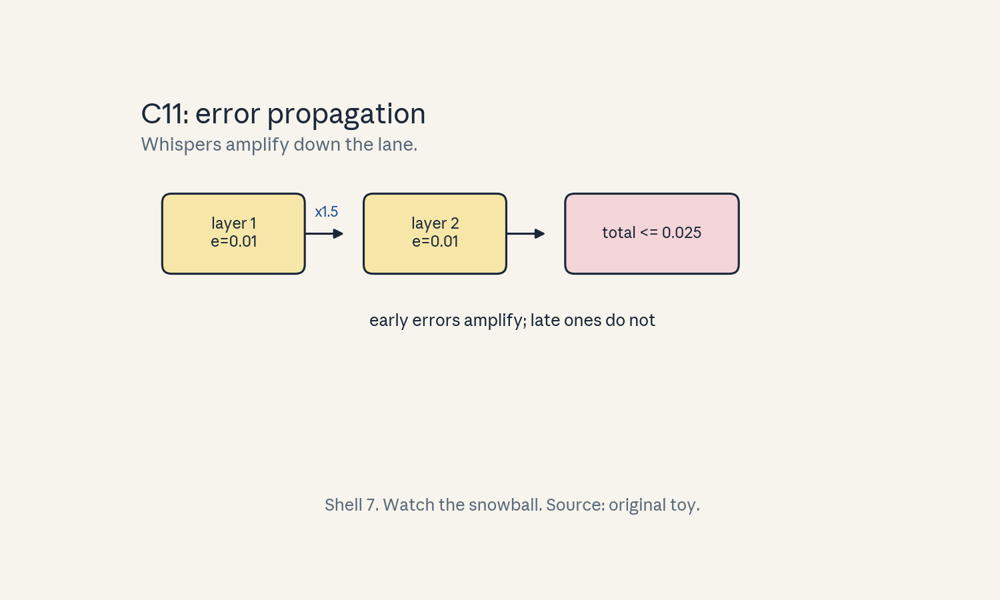
- Audit:
u05c11tof11. Before: per-layer errors. After: total bound. One rule: amplify downstream.
C12: quality validation
Source, scope, objectives, dependencies
Calendar anchor: Week 4, Oct 14 (memory-efficient networks family). Scope: validating compressed models. Objective: design the validation protocol. Depends on U01 C11, C12.
Motivating question and tiny toy
Question: the int8 model has 1% higher perplexity. Do you ship it? Toy: fp16 ppl 12.0, int8 ppl 12.1.
Mental model
A road test, not a weigh-in. Perplexity is one gauge, the task evals are the road. A 1% perplexity rise with flat task scores ships. A flat perplexity with a broken long-range task does not.
Objects, shapes, assumptions
- Gates: perplexity delta, task accuracy deltas, latency/throughput targets.
- Budget: e.g. ppl +2% max, task -1% max (example thresholds, stated as policy not fact).
- Assumption: evals cover the deployment tasks.
Derivation
No derivation: this is protocol. Steps: (1) fp16 baseline numbers, (2) compressed numbers, same evals, (3) delta table, (4) ship/no-ship against the policy, (5) canary in prod.
Computed example
Toy: ppl 12.0 -> 12.1 (+0.8%), quiz 4/4 -> 4/4, latency 20 -> 12 ms. Verdict: ship. Counter-toy: ppl flat, long-range retrieval 90% -> 70%: no-ship. Lab-05 encodes the gate.
Implementation and checks
def ship_decision(ppl_d, task_d, lat_ms, ppl_budget=0.02,
task_budget=-0.01, lat_target=15.0):
return (ppl_d <= ppl_budget and task_d >= task_budget
and lat_ms <= lat_target)
assert ship_decision(0.008, 0.0, 12.0)
assert not ship_decision(0.008, -0.05, 12.0)
Check: all three gates must pass. Lab-05 checks.
Complexity and costs
Validation costs eval compute. Skipping it costs broken deployments.
Nearest alternative and selection boundary
Nearest alternative: perplexity-only validation. Selection boundary: never. Task evals are the gate.
Failure case and counterexample
Broken assumption: “perplexity gates everything.” Counterexample: the long-range task above. Run the task suite.
Research reading and falsifiable extension
Reading: the Oct 14 session, U01 C11. Falsifiable extension: correlate ppl delta with task deltas across 20 compression configs. Hypothesis: ppl under-predicts long-range task damage. Report per-task correlations.
Exercises
- E56 (recall): name the three gates.
- E57 (numerical): ppl +0.8%, task +0, lat 12 ms. Ship?
- E58 (failure diagnosis): ppl flat, task down. What does this prove about the gate?
- E59 (counterfactual): latency target missed but quality great. Ship?
- E60 (research): state the correlation hypothesis.
Visual units
- Figure
u05_c12_gates.png: three gate lights (perplexity, task, latency) green/red. Source: original toy. Shell 5 (checklist).
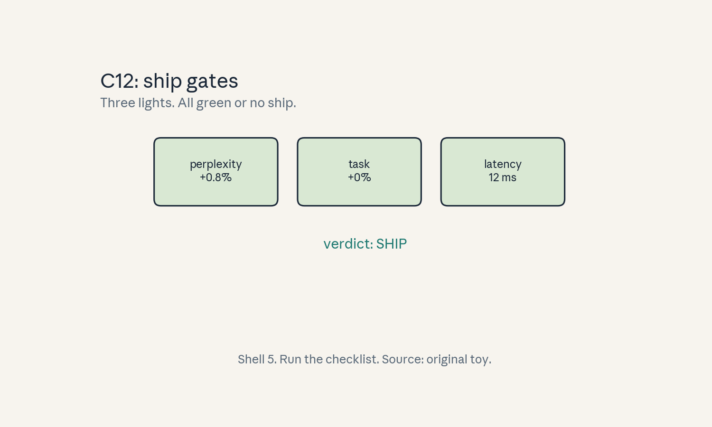
- Audit:
u05c12tof12. Before: compressed model. After: verdict. One rule: gate all three.
Unit chapter plate
Figure u05_chapter.png: left shows the naive view
(fp32 dense, full traffic), center shows the stored
objects (scales, masks, block factors), right shows
the compressed system (int8 weights, 2:4 kernels,
structured layers), bottom line: “Shrink the bytes.
Prove the quality.” Numbers from the lesson toys.
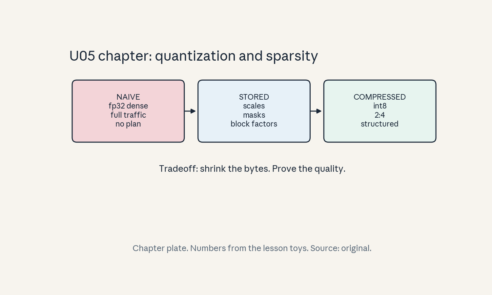
Russian-doll ladder: linear quantization (major mechanism)
- Shell 0: question: can 8 bits stand in for 32 without breaking quality? Observable: task delta.
- Shell 1: toy: [-1, 1] in 4 bits (C01).
- Shell 2: objects: s, z, levels, range.
- Shell 3: rule: x_q = clamp(round(x/s) + z).
- Shell 4: algorithm: quantize/dequantize in C01.
- Shell 5: invariant: zero maps to zero, in-range error <= s/2.
- Shell 6: change granularity (tensor -> channel), predict MSE drops, confirm in lab-05.
- Shell 7: break the range (outlier): the quiet channel dies.
- Shell 8: compare int8 vs fp16 vs 2:4 sparsity under equal quality bar.
- Shell 9: falsifiable extension in C01 (clip percentile).
- Shell 10: production: the three gates (C12) own the ship decision, owners sign the policy.
Role bridge
- Research engineer: the (s, z) math and granularity choice (C01-C03) are the daily tools of inference optimization.
- MLOps: the three gates (C12) are the deployment checklist for every compressed model.
- LLM engineer: error propagation (C11) tells you which layers keep their bits.